This Issue
August 2026 edition
68% vs 33%
St. Tammany's share of recorded flip resales this edition versus the same period a year ago
Flip exits have relocated across the lake: St. Tammany took 68% of resales this edition against 33% a year ago
Flip resales concentrated in St. Tammany, which took 68% of recorded exits versus 33% a year ago, while Jefferson fell to 26% from 57%. Slidell East (70461) alone accounted for 24% of exits against 3% a year ago, and the median flip sat 44.2 km from the CBD versus 17.0 km. The shift came with far fewer deals: 34 flips sold versus 75, at a $231,000 median versus $240,000. Basis did the work, and it thinned — median gross margin per flip was $87,050 against $120,000 a year ago.
Investor Playbook
What this issue's numbers suggest checking, by investor type. Observations from recorded data — not investment, legal, or tax advice.
Your buyer list has shrunk to two dozen names, and most of them are working Slidell
Wholesalers
Only 24 operators sold flips this edition, and the top ten took 66.9% of flip revenue, so the data suggests calling before you contract rather than after. Deal flow is clustering in 70458 (7 buys, 6 flips, $71,600 median buy), 70461 (5 buys, 8 flips, $180,000 median buy) and 70460 (6 buys, $110,050 median buy). Note St. Charles shows 0 recorded purchases this window against 14 a year ago — the county feed is likely missing, so treat that parish as unmeasured rather than dead.
Resale price held; the spread did not
Flippers
Median flip resale was $231,000 versus $240,000 a year ago and $142.31/sqft versus $145.73 — but median gross margin fell to $87,050 from $120,000, and margin percentage to 54.8% from 85.8%. Sale-to-assessed compressed to 1.32 from 1.68, so exits are landing closer to assessment than last year. With a 217.5-day median hold, it is worth underwriting Slidell-area acquisitions off today's $131,650 median resale in 70458 and $178,000 in 70461, not off last year's Jefferson comps.
Entry basis has moved with the flip trade
Landlords
Median investor purchase is $157,500 against $179,796 a year ago, with Slidell buys at a $110,000 median and $66/sqft — the lowest square-foot basis among the busier cities against Metairie's $135/sqft on 25 purchases. Condo product (12 deals, $58,000 median, $80/sqft) remains the cheapest entry ticket on record this edition. With 439 first-time local landlords appearing in the records and 338 adding units since the last drop, competition for the sub-$150,000 house is still present.
The recorded private channel has nearly vanished; banks are carrying rehab paper
Private lenders
One private loan was recorded this edition against 24 a year ago, and seller notes fell to 14 from 49. Over the trailing twelve months, 71.0% of the 138 financed purchases funded rehab, at a median $163,654 loan and a 1.12 median loan-to-price — GMFS (10 loans), Rocket (7) and Fidelity Bank (5) lead the count. The gap the data suggests is the $70,000–$180,000 Slidell-basis deal, below most bank medians and above the smallest recorded notes; verify hold assumptions against the 217.5-day median.
2-4 units are the cheapest square footage on the board
Multifamily investors
Seventeen 2-4 unit purchases recorded at a $417,300 median and $75/sqft, below single family at $101/sqft. The most active buyer of the period, J B Thompson LLC, took 5 parcels for $13.3M, mostly 2-4 units in Kenner. Small multifamily was 0% of flip resales this edition against 6.7% a year ago, so exit comps for renovated duplexes are thin — the data suggests underwriting these to hold, not to resell within the year.
Factoids
Numbers from this period a practitioner would repeat to a colleague. Each computed directly from recorded instruments.
116 investor purchases — recorded investor purchases this edition
trending down · vs 206 a year ago and 135 in the prior period
Acquisition volume is running at roughly half of last year's pace across the eight-parish footprint. The median purchase also stepped down to $157,500 from $179,796 a year ago.
$87,050 median gross flip margin — median gross spread between buy and resale on the 34 flips sold
trending down · was $120,000 a year ago
Median margin percentage fell to 54.8% from 85.8%, on a hold of 217.5 days versus 212. Rehab and carry are not in public record, so these are gross figures.
24 flip operators — distinct sellers behind this edition's flip resales
trending down · vs 63 operators a year ago
The top ten operators took 66.9% of flip revenue, up from 38.7% a year ago. The exit side of this market is now a short list of names, which matters when you price a wholesale assignment.
1 recorded private loan — private loans recorded against residential deals this edition
trending down · vs 24 a year ago
Median recorded private loan was $25,425 against $302,750 a year ago, and seller-financed notes fell to 14 from 49. Over the trailing twelve months 138 of 201 observed purchases carried financing, a 68.7% financed share at a $163,654 median loan.
$75/sqft on 2-4 units — median price per square foot paid on 17 recorded 2-4 unit purchases
holding steady · vs $101/sqft on 79 single-family purchases
Small multifamily traded at a $417,300 median ticket but the lowest square-foot basis of any product type this edition. Condos, 12 deals at a $58,000 median, priced at $80/sqft.
835 homes in flipper inventory — properties held by flippers and not yet resold, latest month
trending down · vs 1,067 in the same month a year ago
The held pipeline has drawn down every month since late 2025 as resales (38 in the latest month) outpace flipper purchases (23). Ten aged out of the window in the latest month.
Market Activity — Investor Purchases
Monthly count of investor purchases of MSA properties (left axis) and the median purchase price (right axis), trailing 13 months. The most recent month can grow up to ~15% as late recordings arrive.
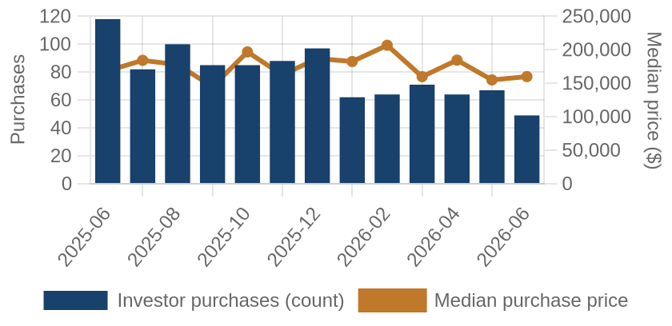
Investor purchases per month (bars) and median purchase price (line), trailing 13 months.
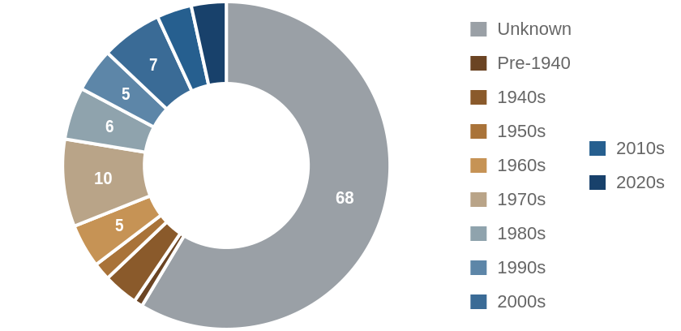
Which vintage of housing investors bought this edition, by decade built.
Where the Money Went
The geography of the period's investor activity: which zip codes saw the most recorded deals, and the largest individual transactions at street level.
The 8 busiest zip codes for investor deals
Pins rank the busiest zips by recorded investor deals (purchases + flips of existing homes) this period — #1 busiest; orange = top 3; pin size scales with deal volume. Median buy is the typical investor purchase; median sale the typical flip resale. Click a pin for details; full table below.
| # | Zip | Area | Purchases | Flips | Median buy | Median sale |
|---|
| #1 | 70458 | Slidell | 7 | 6 | $71,600 | $131,650 |
| #2 | 70461 | Slidell East | 5 | 8 | $180,000 | $178,000 |
| #3 | 70001 | Metairie | 10 | 1 | $214,500 | n/a |
| #4 | 70003 | Metairie West | 10 | 0 | $157,000 | n/a |
| #5 | 70053 | Gretna | 7 | 1 | $150,000 | n/a |
| #6 | 70058 | Harvey | 6 | 2 | $146,388 | n/a |
| #7 | 70460 | Slidell West | 6 | 2 | $110,050 | n/a |
| #8 | 70056 | Terrytown | 6 | 1 | $209,950 | n/a |
A representative deal in each of the busiest zips
One deal per zip: the largest matching this market's typical house (typical for this market: 1580 sqft, 3 bed, built around 2007; priced within 4x the county assessment and under 5x its own zip's median).
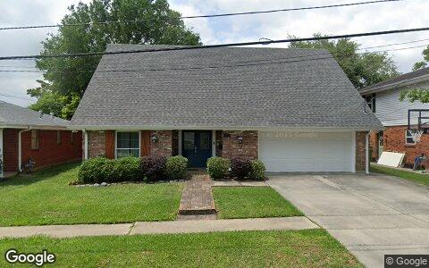
$374,000 · Purchase
4512 TARTAN DR, Metairie LA 70003
Single family · 2,229 sqft · Jun 4
Street View Apr 2025 — before the purchase
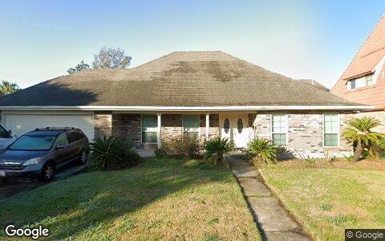
$269,900 · Purchase
712 MARLENE DR, Gretna LA 70056
Single family · 2,216 sqft · May 13
Street View Dec 2024 — before the purchase
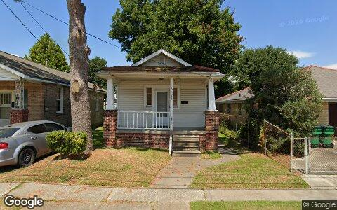
$132,000 · Purchase
3623 BAUVAIS ST, Metairie LA 70001
Single family · 1,000 sqft · May 22
Street View Sep 2025 — before the purchase
Largest flip margin deals of the period, at street level
Gross margin = recorded sale price minus the flipper's recorded purchase price. Purchase deeds are recoverable for roughly 4 in 10 flips; rehab and carry costs are not public record.
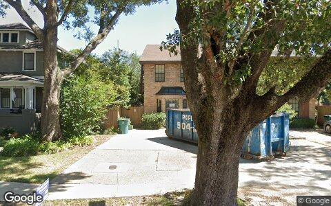
$298,000 gross · bought $475,000 (Sep 2025) → sold $773,000
127 LAKE AVE, Metairie LA 70005
Single family · 2,821 sqft · May 20
Street View Oct 2025 — during the flip
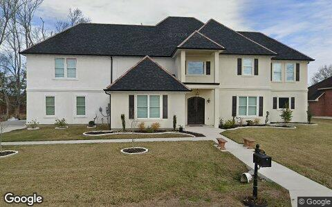
$208,500 gross · bought $265,000 (Jan 2026) → sold $473,500
204 UNION DR, Hahnville LA 70057
Single family · 4,364 sqft · May 1
Street View Jan 2019 — before the flip (pre-renovation)
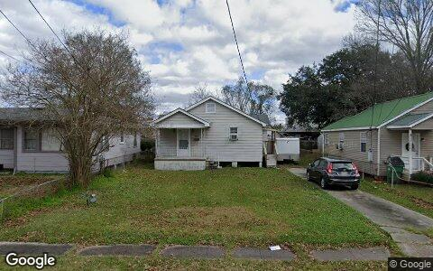
$185,000 gross · bought $70,000 (May 2025) → sold $255,000
611 MACARTHUR AVE, Harvey LA 70058
Single family · 5,998 sqft · May 12
Street View Jan 2019 — before the flip (pre-renovation)
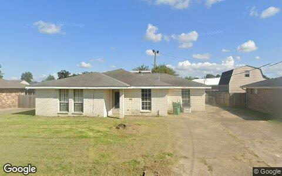
$183,000 gross · bought $102,000 (Dec 2025) → sold $285,000
63 SAINT ANTHONY ST, Luling LA 70070
Single family · 1,640 sqft · May 26
Street View Oct 2025 — before the flip (pre-renovation)
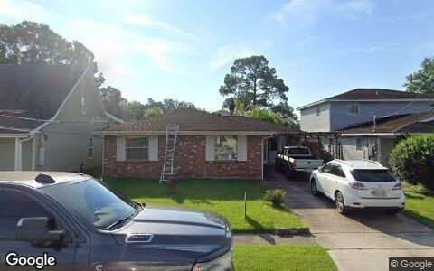
$153,000 gross · bought $225,000 (Oct 2025) → sold $378,000
125 ORCHARD RD, New Orleans LA 70123
Single family · 1,625 sqft · May 29
Street View Sep 2025 — before the flip (pre-renovation)
$145,000 gross · bought $155,000 (Nov 2025) → sold $300,000
2236 HAMPTON DR, Harvey LA 70058
Single family · 2,240 sqft · May 29
Street View Jan 2025 — before the flip (pre-renovation)
Flip Structure — Year over Year
How the flip market itself is changing: margins, who is doing the flipping, what they flip, and where. Same two calendar months, this year vs last, from the current data extract.
| Flip market structure | Same months last year | This edition |
|---|
| Flips sold | 75 | 34 |
| Median sale | $240,000 | $231,000 |
| Median $/sqft | $146 | $142 |
| Sale vs county-assessed | 1.68× | 1.32× |
| Median gross margin (matched buys) | $120,000 | $87,050 |
| Median margin % | 86% | 55% |
| Median hold | 7.0 mo | 7.2 mo |
| Homes bought by flippers | 90 | 33 |
| Net to inventory (bought − sold) | +15 | −1 |
| Active flippers | 63 | 24 |
| Top-10 flippers' revenue share | 39% | 67% |
| Median house: sqft / beds / built | 1734 / 3 / 1983 | 1707 / 4 / 1990 |
| Pre-1950 stock share | 0% | 0% |
| 2–4 unit share | 7% | 0% |
| Median distance from downtown | 17.0 km | 44.2 km |
Homes bought counts every deed recorded to a known flipper in the window, resold or not. Net to inventory is that minus flips sold. The standing stock is in the Flip Pipeline section.
Attributed profit per flip (per-investor aggregates, by drop period): Feb 26→Jun 26: 54 flips, $157,093/flip · Jun 26→Aug 26: 18 flips, $140,348/flip.
County mix (share of flips, last year → this edition): St. Tammany 33%→68% · Jefferson 57%→26% · St. Charles 4%→6% · Plaquemines 1%→0% · Orleans 4%→0%.
Biggest zip share moves: Slidell East 2.7%→23.5% · Slidell 6.7%→17.6% · Marrero 10.7%→0.0% · Metairie West 8.0%→0.0% · Kenner North 8.0%→2.9% · Westwego 8.0%→2.9%.
Flip Pipeline — Buying, Selling and Inventory
Homes bought by known flippers and homes they resold, per month, alongside the stock sitting in flipper hands. A house enters inventory when a flipper buys it and leaves on the next recorded sale, at any price. Purchases still unsold after five years are treated as holds and drop out.
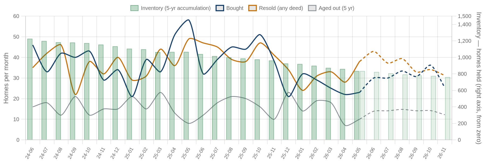
Solid = recorded, dashed = projected. Green bars are inventory on the right axis: homes bought and not yet resold. Aged out is purchases passing five years unsold. Inventory moves by bought minus resold minus aged out.
| Flip pipeline | Bought / mo | Resold / mo | Aged out / mo | Inventory |
|---|
| Latest recorded month (2026-05) | 23 | 38 | 10 | 835 |
| Projected (2026-11) | 25 | 31 | 12 | 761 |
Method: a straight-line trend through the last 24 months, adjusted for the month of the year, shown dashed as a projection. The series stops before the newest month or two, where deeds are still recording.
Who's Funding the Deals
First mortgages open on flipper purchases from Jul 2025 – Jun 2026 that have not yet resold. 69% carried recorded debt; the rest closed cash or off-record. Ranked by deal count.
69%
Purchases financed
138 of 201 flipper purchases carried a recorded first mortgage
$163,654
Typical loan
median 1.12× the purchase price — the median lender advances rehab money on top of the buy
71%
Funding the rehab too
98 of 138 loans exceed the purchase price, so the lender is covering work as well as the buy
| Lender | Loans | Borrowers | Median loan | Loan vs price | Funds rehab | Median purchase |
|---|
| GMFS LLC | 10 | 9 | $149,758 | 1.16× | 60% | $132,878 |
| Rocket Mortgage LLC | 7 | 3 | $189,150 | 1.04× | 100% | $187,838 |
| Fidelity Bank | 5 | 4 | $115,862 | 1.12× | 100% | $112,877 |
| Resource Bank FB | 5 | 4 | $103,500 | 0.83× | 20% | $90,000 |
| Gulf Coast Bank & Trust Co | 4 | 4 | $234,200 | 1.37× | 100% | $161,500 |
Rates and terms are not published: the county feed models both. Borrowers counts the distinct flippers on each lender's book. Loan vs price is the recorded first mortgage divided by what the buyer paid. Above 1.00x the lender is funding purchase plus rehab; below it the buyer brought cash to the table. Blanket mortgages covering several parcels are excluded, as are loans outside 0.1x-3x the price. Rates and points are not public record.
Flipper Profile — The Working Flipper
The 70th–90th percentile of local flippers by lifetime flip count — the established operators below the whales: 3–5 lifetime flips each. Bath counts are not in the assessor extract.
115
Flippers in the band
each with 3–5 lifetime flips (avg 3.4)
$108,950
Median gross margin
292 flips matched to their purchase price
6.4 mo
Typical hold
purchase to resale, matched deals
1580 sqft · 3 bd
Typical house
median year built 2007
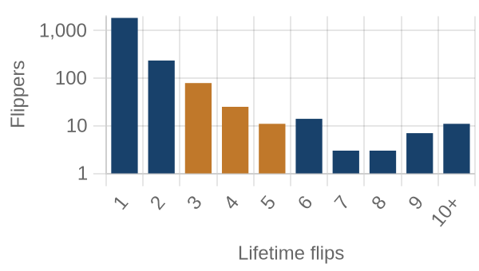
flippers by lifetime flips · orange = this band
Where they work: Westwego (70094) 9% · Kenner North (70065) 7% · Metairie (70001) 7% · Terrytown (70056) 6% · Marrero (70072) 5%.
Market Pulse
| per month, Feb–Jun 2026 | per month, Jun–Aug 2026 | change | avg/mo 2yr | avg/mo 4yr |
|---|
| ▼ Homes bought by flippers | 45 | 17 | -63% | 36 | 43 |
| ▼ Flips sold (deeds) | 38 | 17 | -55% | 37 | 43 |
| ▼ Lending deals funded | 15 | 8 | -50% | — | — |
| ▲ Seller/notes held (net) | 11 | 33 | +195% | — | — |
| ▼ Investors (net) | 220 | 69 | -69% | — | — |
Flips and flipper purchases = recorded deeds, same two months each year; their 2- and 4-year columns are per-month averages of the deed series. The remaining rows come from the investor file, which spans 13 months, so they have no multi-year average (2026: Jun 2026 → Aug 2026; 2025: Feb 2026 → Jun 2026).
Past Issues
Methodology
Source Data
County recorder & assessor via FARES
Every figure is computed from recorded instruments (deeds, mortgages, assignments) and assessor property records for the five counties of the New Orleans-Elyria MSA. No surveys, no estimates, no listings data.
This edition analyzes transactions dated May 1 – June 30, 2026, as recorded through the 2026-08 data extract.
Who Counts as an Investor
Transaction-pattern identification
Investors are entities whose recorded transaction history looks like investing: rental holding (landlords), short-hold resales (flippers), private mortgage lending, note holding, or contract assignment (wholesalers). Banks, homebuilders, iBuyers, SFR funds, and government entities are identified by name and reported separately from small investors.
How Comparisons Work
Attribution deltas + same-window comparisons
The Market Pulse reports activity attributed between successive data drops, from the per-investor lifetime totals maintained upstream — periods differ in length, so per-month rates are shown. Elsewhere, "vs. year ago" compares the same calendar months one year earlier, counted from the same data extract. Transfers under $5,000 (quitclaims, partial interests) are excluded everywhere. Counts lag recording by 4–8 weeks, and the newest month can grow up to ~15% as late records arrive — direction is reliable before magnitude.
Known Limits
Floors, not ceilings
Wholesale assignments only appear when they touch a recorded deed, so those counts are a floor. Flip hold times are measured from the prior recorded sale. Names are the owner of record, which may be an LLC or trust.
About
Purpose
A working tool for small real estate investors in Greater New Orleans: what actually closed, where, at what prices, and what it suggests checking next — one theme per issue.
Cadence
Published with each bi-monthly data drop, covering the two most recent complete months of recorded activity.
Disclaimer
Observations from public records, not investment, legal, or tax advice. Past activity does not guarantee future results. Verify any property or counterparty independently before transacting.